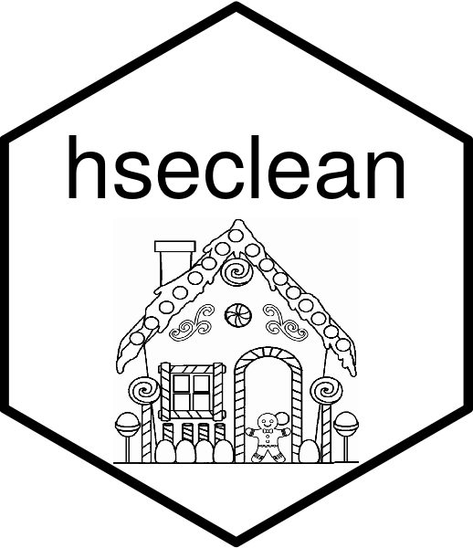

Read the National Survey for Wales 2019-20
Source:R/read_NSW_2019_20.R
read_NSW_2019_20.RdReads and does basic cleaning on the National Survey for Wales 2019-20.
Usage
read_NSW_2019_20(
root = c("X:/", "/Volumes/Shared/")[1],
file =
"HAR_PR/PR/Consumption_TA/HSE/National Survey for Wales (NSW)/NSW 2019/UKDA-8718-tab/tab/national_survey_for_wales_respondent_file_2019-20_ukds.tab"
)Arguments
- root
Character string - the root directory. This is the section of the file path to where the data is stored that might vary depending on how the network drive is being accessed. The default is "X:/", which corresponds to the University of Sheffield's X drive in the School of Health and Related Research. Within the function, the root is pasted onto the front of the rest of the file path specified in the 'file' argument. Thus, if root = NULL, then the complete file path is given in the 'file' argument.
- file
Character string - the file path and the name and extension of the file. The function has been designed and tested to work with tab delimited files '.tab'. Files are read by the function [data.table::fread].
- select_cols
Character string - select either: "all" - keep all variables in the survey data; "tobalc" - keep a reduced set of variables associated with tobacco and alcohol consumption and a selected set of survey design and socio-demographic variables that are needed for the functions within the hseclean package to work.
How the data is read and processed
The data is read by the function [data.table::fread]. The 'root' and 'file' arguments are pasted together to form the file path. The following are converted to NA: c("NA", "", "-1", "-2", "-6", "-7", "-8", "-9", "-90", "-90.0", "-99", "N/A"). All variable names are converted to lower case. The cluster and probabilistic sampling unit have the year appended to them. Some renaming of variables is done for consistency with other years.